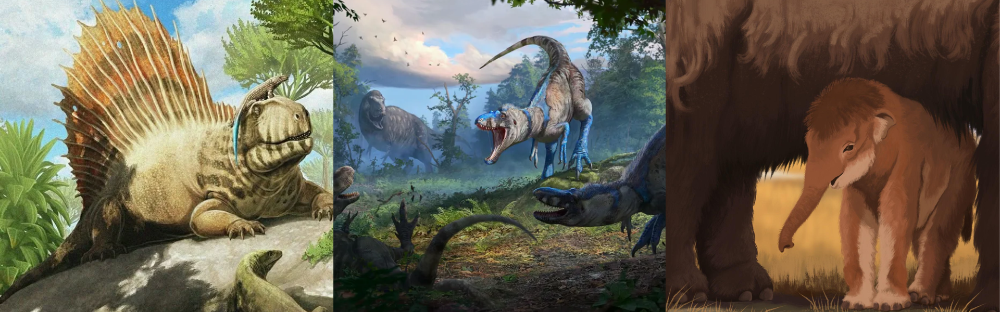
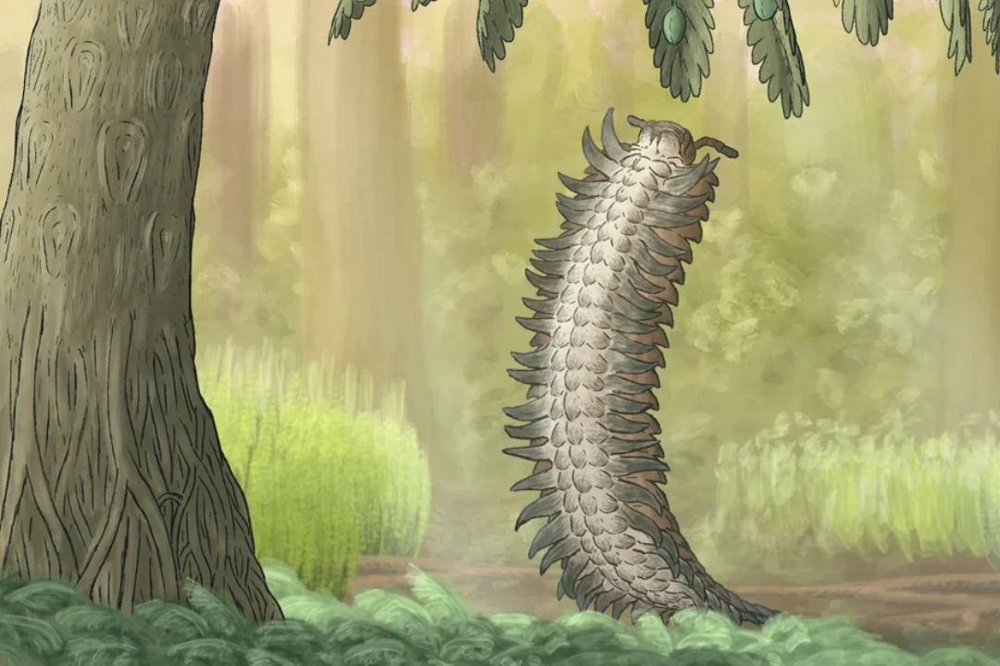
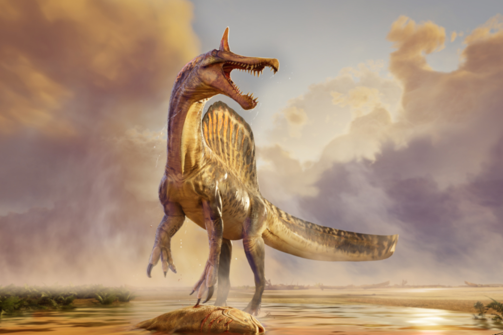
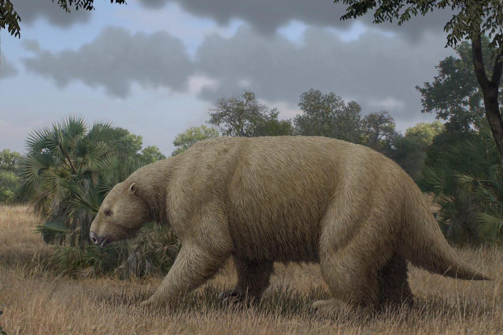

540+
Millones de años de historia

Archivo Prehistórico es un recurso educativo dedicado a la historia de la vida en la Tierra a lo largo de más de 540 millones de años de evolución, desde la explosión cámbrica hasta el final de la Edad de Hielo.
Millones de años de historia
Grandes extinciones masivas
Millones de años desde la extinción de los dinosaurios no avianos


Miles de generos de dinosaurios extintos, avianos y no avianos, reconocidos cientificamente y considerados validos se encuentran aqui

Miles de generos de mamiferos reconocidos cientificamente y considerados validos se encuentran aqui, desde sus origenes en el Mesozoico y su apogeo en el Cenozoico